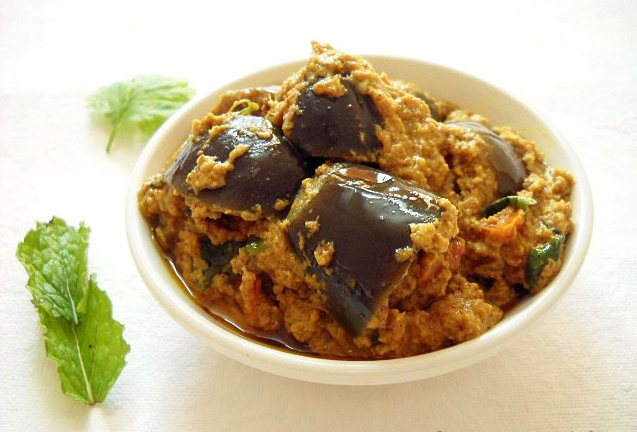

Ingredients
1.Brinjal - 4
2.Oil - 4 tblsp
3.Curry Leaves - few
For stuffing
1.Channa Dal - 1 tblsp
2.Urad Dal - 1 tblsp
3.Cumin seeds - 1 tsp
4.Corriander Powder - 2 tsp
5.Chilly Powder - 1 tsp
6.Shakthi Curry Masala - 1 tsp
7.Turmeric Powder - 1/4 tsp
8.Salt - as needed
9.Coconut - 3 tblsp
Method
1. Make a slit in the brinjals. The slits should be made on the side opposite to
the stem. It should be deep enough to hold the stuffing but at the same time the
brinjal should hold its shape.
2. Dry roast the channa dal, urad dal, cumin seeds and coconut for about 5-8 minutes till a nice aroma comes and everything has been roasted.
3. Make a powder of the above ingredients along with salt, curry masala, corriander powder, chilly powder and turmeric powder. If it is difficult to make a powder, just add a little water and grind it to a paste.
4. Stuff the brinjals with the powder/paste.
5. Heat oil in a heavy bottomed pan, add some chopped curry leaves. Gently place the stuffed brinjals in the hot oil.
6. Add any leftover stuffing to the pan too. Cover and cook on medium heat.
7. Keep turning every now and then so that all sides are evenly cooked.
8. Cook for about 10- 15 minutes till the brinjals are nicely cooked and the oil oozes from the masala.
9. Serve this with white rice, chappatti, biriyani or pulaos.